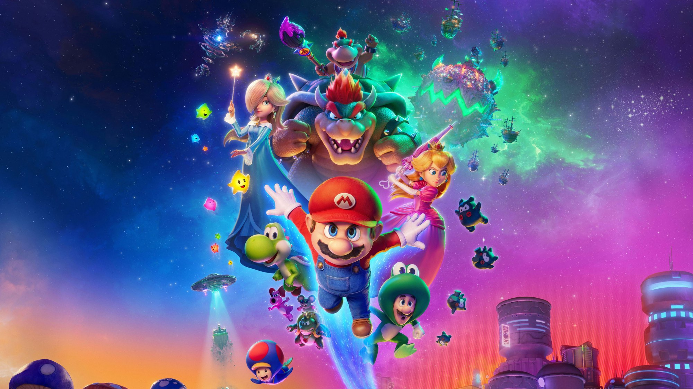
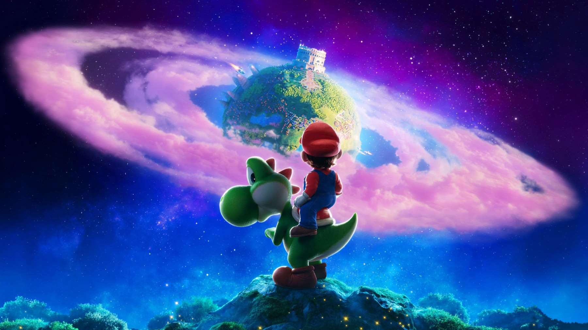
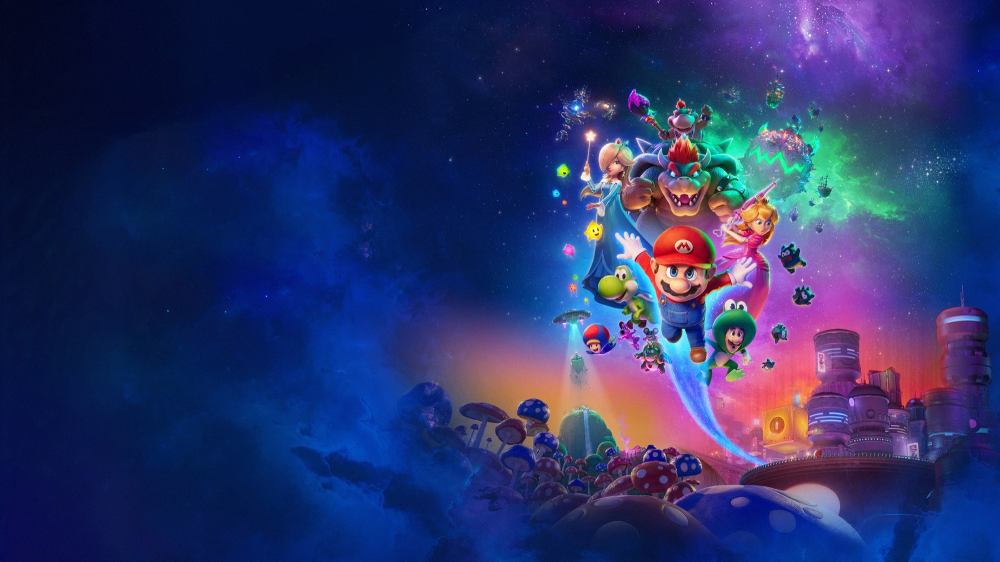

Super Mario Galaxy – Il film
Mario e Luigi volano nello spazio per salvare Rosalina: l'animazione è splendida e il successo al botteghino enorme, ma la storia resta una semplice successione di mondi
Il primo Super Mario Bros. Il film aveva messo d'accordo i botteghini e molto meno la critica, quindi il sequel partiva con un'aspettativa precisa: fare ancora più spettacolo. La promessa è mantenuta, e anche con una certa generosità. Quanto al resto, è un'altra storia. Super Mario Galaxy – Il film è uscito nei cinema italiani il 1 aprile 2026 e, alla luce di ciò che ne ha scritto la critica, il nostro giudizio è semplice: ottimo da guardare, leggerissimo da ricordare. Questa recensione è senza spoiler.
Di cosa parla Super Mario Galaxy – Il film?
Mario e Luigi hanno ormai casa nel Regno dei Funghi e affrontano i guai quotidiani con il loro immancabile entusiasmo. Bowser, ridotto di dimensioni e tenuto prigioniero, deve tornare sulla retta via, mentre tra i due idraulici arriva Yoshi. Il compleanno di Peach si trasforma in un'avventura tra le stelle: i fratelli partono verso lo spazio per sventare i piani di Bowser Jr. e mettere in salvo Rosalina. Il copione porta la firma di Matthew Fogel, la regia è ancora di Aaron Horvath e Michael Jelenic.

Un cast da blockbuster
Tornano Chris Pratt nei panni di Mario, Charlie Day come Luigi, Anya Taylor-Joy per Peach, Jack Black per Bowser e Keegan-Michael Key come Toad. Tra le novità spiccano Benny Safdie, voce di Bowser Jr., Donald Glover come Yoshi e Brie Larson come Rosalina. A completare il gruppo c'è Glen Powell, che dà la voce a Fox McCloud, volto preso in prestito da un'altra serie Nintendo. In Italia il doppiaggio vede anche Claudio Santamaria, ma l'effetto resta quello di un film pensato per il grande pubblico internazionale, con tanti nomi e poco spazio per ciascuno.
Cosa funziona: l'animazione e il ritmo
La parte tecnica è il vero punto di forza. Anche chi non ha amato il film riconosce che l'animazione raggiunge un livello eccellente: movimenti fluidi, immagini dense di dettagli, colori saturi, superfici lucide e un montaggio che non lascia mai respirare. Quinlan parla di un progresso tecnologico che si impone con forza sullo schermo, e su questo siamo d'accordo. La colonna sonora di Brian Tyler accompagna l'azione con energia e le sequenze spaziali sono quelle in cui il film si diverte di più.
Funziona anche il rapporto tra Bowser e Bowser Jr., uno dei pochi fili davvero emotivi della vicenda. Peccato che il film lo sfiori senza approfondirlo: Il Cineocchio nota la stessa cosa, definendolo un accenno interessante in una storia che preferisce correre.
Uno spettacolo che si guarda a bocca aperta e si dimentica in fretta.
Cosa non funziona: la storia
Il problema è l'impianto. La missione per salvare Rosalina è, come la descrive Il Cineocchio, un dispositivo minimale incapace di reggere un vero sviluppo drammatico, e i personaggi agiscono senza davvero cambiare. Il film attraversa un mondo dopo l'altro come se ci mostrasse la partita di qualcun altro, secondo l'efficace immagine di Quinlan, che gli assegna 5,5 su 10. Il Cineocchio è appena più generoso con un 6 su 10, e ricorda come nel videogioco ogni pianeta invitasse a esplorare, mentre qui gli ambienti diventano tappe da attraversare in fretta.
C'è poi il fan service. Strizzare l'occhio ai videogiocatori è legittimo e spesso divertente, ma quando ripetere elementi già noti prende il posto di creare qualcosa di nuovo, l'entusiasmo si consuma. Alcune idee promettenti, come il Bowser ridotto di dimensioni e in rieducazione o i due fratelli in versione baby, restano appena accennate. Per noi è un peccato, perché con un po' più di coraggio questa galassia avrebbe potuto raccontare molto di più.

Accoglienza e incassi
La critica internazionale è divisa e piuttosto fredda: secondo Wikipedia, a ottobre 2026 il film ha il 42% di recensioni positive su 224 giudizi su Rotten Tomatoes e 37 su 100 su Metacritic, mentre il pubblico è stato più generoso, con una CinemaScore di A− (il primo film aveva ottenuto A). In Italia MYmovies parla di recensioni contrastanti e un look ancora luccicante ma con una trama che non regge. Eppure il pubblico ha risposto con entusiasmo: sempre secondo Wikipedia, gli incassi mondiali hanno superato 1,013 miliardi di dollari, di cui 429,8 milioni in Nord America, un risultato che lo rende il secondo film tratto da un videogioco più visto di sempre, dietro al primo capitolo. Il budget, secondo la stessa fonte, era di 110 milioni di dollari.
In Italia, sempre secondo MYmovies, l'incasso ha raggiunto 14,5 milioni di euro.
Dove vederlo oggi
Il film è uscito in digitale negli Stati Uniti il 19 maggio 2026 e in home video, con edizioni in 4K, Blu-ray e DVD, il 16 giugno 2026. In Italia, a ottobre 2026, la scheda TMDB lo segnala in noleggio su Apple TV Store, Rakuten TV, Amazon Video e CHILI, e non in abbonamento su nessuna piattaforma streaming.
Vale la pena vederlo?
Se siete fan dell'universo Nintendo, o avete bambini da portare al cinema, sì: è colorato, veloce e a tratti davvero spettacolare. Se invece cercate una storia con personaggi capaci di sorprendere, resterete con la sensazione di un sequel pensato per stupire gli occhi più che per toccare il cuore. A convincere di più, per noi, è l'animazione, non certo il racconto.
Se da un lato Super Mario Galaxy – Il film è un trionfo di animazione, ritmo e colore, dall'altro la sua storia è così leggera da svanire appena si accendono le luci. Un sequel da vedere con il pubblico giusto e le aspettative giuste: divertente, ma lontano dal grande cinema d'animazione.
Domande frequenti
Quando è uscito Super Mario Galaxy – Il film in Italia?
Nei cinema italiani è uscito mercoledì 1 aprile 2026, distribuito da Universal International.
Quanto dura il film?
98 minuti, secondo MYmovies e Wikipedia.
Dove vedere Super Mario Galaxy – Il film oggi?
A ottobre 2026, secondo la scheda TMDB, in Italia è disponibile in noleggio digitale su Apple TV Store, Rakuten TV, Amazon Video e CHILI.